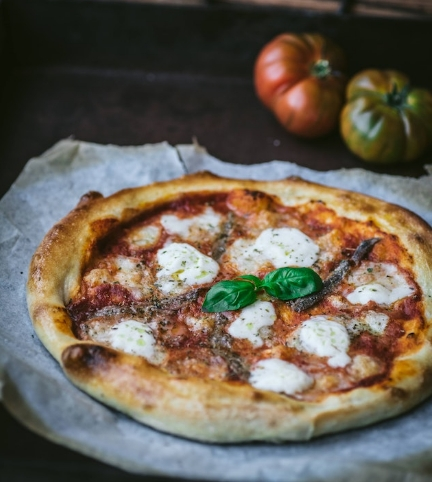

Pizza Recipe
Dough ingredients
- 4x cups of flour
- 2x 1/2 cups of luke warm water
- 3x tbsp of olive oil
- 2x tbsp of sugar
- 1x tbsp of salt
Making the dough
- Begin by placing 2x cups of flour into a mixing bowl
- Add 2x tbsp of sugar and 1x tbsp of salt
- Add the other 2x cups of flour
- turn on faucet and wait for water to get warm, it should feel slightly warm
- Add 2 1/2x cups of warm water to the bowl and begin mixing on Speed 1 (or kneading)
- Add 3x tbsp of olive oil and begin mixing
- Knead or mix for roughly 10min
- The dough should be wet enough to stick, but dry enough to keep form of a ball
- Use more flour or water to get the above consistency
- Place on countertop with plastic wrap or towel over bowl
- Allow to rise for 3 hours
Sauce ingredients
- 1x small garlic clove (1/2 medium)
- 1x can of tomato paste
- 1x tablespoon extra virgin olive oil
- 1/2x teaspoon dried oregano
- 1x tbsp sugar
- 1x tbsp of salt
- 2x tbsp of basil
- 1/2x cup of finely diced white onion
Making the sauce
- dice up garlic, onions, basil, and oregano
- put tomato paste into a pan and begin warming at low heat
- add up to 1x cup of water to paste for consistency
- wait for paste mixturer to be warm but not boiling
- Mix in 1x tbsp of olive oil, 1x tbspsugar, 1x tbsp of salt
- Add your diced garlic, onions, basil, and oregano
- Stir for 10min
Toppings
- 1x Ball of mozzarella (or pizza mix of cheese)
- 1x Jimmy Dean Maple Sauasge roll
- Tomato sauce above (alternative Classico Hearty Tomato Basil)
- Fresh spinach leaves or zucchini (diced if preferred)
Assembling the Pizza
- After letting dough rise for 3 hours, begin rolling it out into a square
- Place onto a Pizza Stone or Cookie Sheet with a olive oil rub to avoid sticking
- Use 1/2 of pizza dough to make desired shape
- Add sauce, should be thick enough to barely see the dough through it
- Use 1/2 ball of mozzarella after grading or dicing
- Place Spinach leaves to desired amount
- Use 1/2 of COOKED Jimmy Dean Maple Sausage
- Preheat oven to 425 degrees
- Place pizza on stone or cookie sheet into oven
- Cook for 13-15min
- Remove from oven, wait 10min, cut, and enjoy